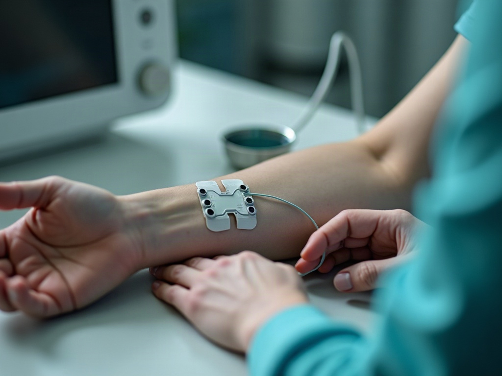

The examination comes first: range of motion, hands-on assessment, a neurological screen, and what you can tell us about the collision and about every symptom since.
01 / Whiplash, San Jose
Whiplash treatment in San Jose, starting with a measurement.
Whiplash is a rapid neck acceleration and deceleration injury: the car stops, your head keeps going, and the soft tissue in your neck absorbs the difference. We examine it, and where the symptoms point to nerve involvement we test for it on site with nerve conduction velocity and electromyography (EMG). The care plan then follows the finding instead of the assumption.

Measured, not estimated
02 / What whiplash actually is
The mechanism

Over before you can brace
A collision moves your car before it moves you. The seat pushes your torso forward while your head lags behind, then the head whips the other way as the vehicle stops. The whole sequence is over in a fraction of a second, which is faster than any muscle can brace against.
What gets hurt is usually not bone. It is the tissue around the neck: muscle, ligament, joint capsule and disc, along with the nerve roots that pass between the vertebrae. That is why a collision at low speed can still injure you, and why the damage to the car is a poor guide to the damage to the occupant.
ElapsedA fraction of a second
LoadedMuscle, ligament, joint capsule, disc
Poor guideBodywork, versus the occupant
03 / Why symptoms arrive late
Feeling fine at the scene is normal.
Adrenaline masks pain for hours. The swelling that produces most whiplash symptoms builds gradually rather than arriving all at once. Soft-tissue symptoms commonly surface days after a collision: stiffness on waking, a headache that starts at the base of the skull, a shoulder that will not turn as far as the other one, tingling in a hand.
A delayed onset is not suspicious and it does not mean you were not hurt. It is the ordinary course of an inflammatory response, and it varies from person to person. It does mean an early examination is worth something, because it gives the delay a documented starting point.
Turning up days later
- Stiffness on waking
- Headache at the skull base
- One shoulder turning less
- Tingling in a hand
04 / Nerve conduction and EMG
How we assess it

05 / Imaging
What imaging can and cannot show
Imaging is used when there is a question it can answer, not by default. High-frequency digital X-ray is on site and it shows bone: fracture, alignment, joint spacing, and existing wear that changes how your neck tolerates the injury. It cannot show a torn ligament or a strained muscle. A normal X-ray after a collision is common and does not mean nothing happened to you.
Diagnostic ultrasound is on site as well, and it does show soft tissue, in real time and while the neck moves. Where a finding calls for MRI or a specialist opinion, we say so and arrange it rather than repeating tests that cannot answer the question.
- Digital X-rayBone, alignment, joint spacing, existing wear
- UltrasoundLigament and muscle, imaged while moving

06 / Treatment
Non-surgical and drug-free.
Clothed, on the table
What the care consists of depends on what the assessment found. Where the injury is soft tissue, treatment is physical medicine: hands-on care and therapeutic modalities aimed at restoring motion and settling inflammation, progressing as the neck tolerates more. Where a disc is involved and a nerve is under pressure, cervical non-surgical spinal decompression may be indicated. Decompression uses a controlled traction cycle to take pressure off the disc; you stay clothed and lie on a table for it.
We explain the risks of any treatment before care begins. Individual results vary, and we reassess at set points rather than assume a plan is working.
07 / Liens and open claims
If it was a car accident
Most of the whiplash we see comes from a collision. If yours did, the billing usually works differently from a routine visit. We accept liens, an arrangement that lets treatment start while a claim is open instead of waiting for the claim to resolve. Whether you qualify depends on your case, and we go through it with you before anything begins.
The auto accident injury page covers the rest, and the on-site diagnostics page covers the testing in detail.
Kept for the claim
08 / Timing, referral, first visit
Common questions
How soon after the accident should I be seen?
As soon as you reasonably can, since inflammation builds over days and an early examination gives your symptoms a documented starting point. Same-day appointments are usually available. [UNCONFIRMED]
What happens on a first visit?
We take the history of the collision and of your symptoms, examine you, and run the testing the examination indicates. Where nerve testing is indicated, it can usually be done in that same appointment.
My X-ray at the emergency department was normal. Do I still need to be seen?
An emergency department has a different job: rule out what is immediately dangerous, treat that, and discharge you. Its job does not include testing for the soft-tissue and nerve injuries that surface later, so a normal emergency visit and a whiplash injury are not in conflict.
Do I need a referral to come in?
No, you can book directly. If you are already working with a personal-injury attorney, tell us at intake so records go where they need to go.
How long does whiplash take to settle down?
That depends on what is injured and on what the assessment shows, and we will not put a number on it before we have examined you. We reassess at set points and adjust, and outcomes differ from case to case.
09 / The next step
Book a no-cost evaluation.
If your neck has not been right since the collision, have it examined and have it documented. We will assess you, test where testing is indicated, and tell you what we find.
Call (408) 292-2225 or request a time online. [UNCONFIRMED]